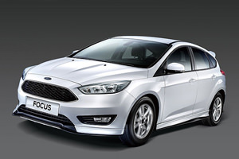

為了能讓廣大的U-CAR讀者，有機會親身體驗Ford全新推出的中型房車Escort，因此U-CAR特別在討論區號召3位特派員，於2018年1月8日與U-CAR編輯團隊，一同進行
「Ford Escort駕馭體驗活動」，依照U-CAR精心規劃的路線，在一日臺北、宜蘭往返的過程中，親自駕駛全新上市的Ford Escort，親自體驗這輛備受矚目的中型房車，在高速、山路及市區等各種路況的駕駛與乘坐表現。
這次活動雀屏中選的3位特派員，分別是陳世章 (星星)、林佑儒 (chili) 與王士彥 (SimonWang)，他們都是經常在U-CAR討論區發表各種文章的活躍成員，並各自擁有不同的駕駛經驗、偏好與習慣。共同的是，這3位特派員都認真、盡力的完成本次Ford Escort試駕體驗任務，並在U-CAR討論區發表精彩的試駕心得文章。
|
Ford Escort以57.9萬元的超值價格強攻國產入門房車市場
Ford總代理福特六和汽車，為了提供國內消費者更豐富的車型選擇，因此在全新第7代Escort於2014年北京車展正式發表後，便積極規劃導入事宜，並成功在2017年11月21日，讓臺灣成為繼中國之後全球第2個將新世代Escort推出上市的國家。
福特六和替Escort規劃了雅致型與時尚型兩個版本，其中雅致型更開出57.9萬元的超優惠價格，直接攻入60萬以下國產入門房車的市場，帶給Toyota Vios、Honda City及Hyundai Verna極大的壓力！
但Escort的厲害之處不只如此，雖然它的定價位在國產小型房車的範疇，不過若從車身尺碼來看，它的車身其實比Focus 4門版更長、軸距也增加不少，就尺碼來說，Escort可說是一輛標準的中型房車，但卻擁有60萬以下、小型入門房車的定價，這就是Escort最吸引人、C/P值最高的地方，同時也是對Toyota Vios、Honda City及Hyundai Verna構成龐大威脅的主要原因。
而究竟Escort的實際表現如何？U-CAR在本篇報導彙整了3位特派員的試駕感想精華，讓你能一次了解特派員對Escort的評價！
陳世章 (星星)－「福特の終於長大《FORD Escort》家庭房車新寵」
- U-CAR特派員常客，曾多次參與新車試駕活動
- 之前擁有過Fiat Punto及美系車，現在開的是Nissan Super Sentra
- 每天都開車，並會利用手機app進行各種測試
多次參與U-CAR特派員試駕活動的陳世章，在開完新一代Escort之後的最主要感想是Ford長大了，他對以前Ford的印象是座椅包覆性太好，導致乘坐舒適性稍差，狹小的後座空間也是Ford向來的缺點，腳部和頭部空間略嫌侷促。
但在Escort上，他發現座椅很寬大、泡綿也很柔軟，坐起來非常舒服，而且支撐性也很好，駕駛座還擁有手動上下調整功能，更容易找到合適的駕駛姿勢。另外，中控臺上配有8吋觸控螢幕影音系統，內建導航、倒車顯影、行車紀錄器、DVD播放及藍牙等，功能非常齊全。而行李廂的深度很深、很平整，實用性相當不錯。
駕駛感受方面，陳世章發現Escort的方向盤設定精良，市區駕駛時很輕手，高速奔馳時也不失路感，開起來輕鬆好上手。最重要的是寧靜度非常出色，他在試駕途中還特別用手機app進行噪音測試，在定速每小時90公里、引擎轉速約2,100轉的狀態下，測出的噪音值為50dB，他說感受上比Super Sentra還要安靜。
陳世章對Escort的動態表現也很稱讚，原本他認為Escort就是輛家庭取向的4門房車，不像Focus那樣擁有運動色彩，但在駕駛途中明顯感受到車體的高剛性，讓操控表現超乎預期的好；而且雖然搭載經濟取向的113匹1.5升汽油引擎，但在車內乘坐3名大男生的情況下，市區起步依然可以輕快前進，絲毫沒有加速遲緩的重拖感受。
林佑儒 (chili)－「Ford Escort 駕馭體驗活動 」
- 從小嚮往汽車編輯工作，目前從事醫療相關行業
- 現任座駕是Honda Civic
- 「偶爾」喜歡和朋友一起去跑山路
從事醫療相關行業的林佑儒，對於試駕新車非常感興趣，因此這次接獲試駕Ford Escort的U-CAR特派員任務時，非常興奮及期待。
按照行程安排，林佑儒一開始被安排在後座體驗乘坐品質，他發現Escort雖定位是入門級房車，但車內卻有不錯的質感，像是後座車窗開關及車門把手等細節，都有用鍍鉻件裝飾，一掃入門車給人陽春的刻板印象。另外，後座空間表現很不錯，以他175公分的身高入座後，膝蓋距離前座椅背還有好一段距離，乘坐起來不感到擁擠，且座椅軟硬適中，並擁有良好的支撐性。
換手之後實際駕駛，林佑儒發現Escort的油門很輕快，加速反應有日系車的敏捷，輕踩油門就能輕快起步，在市區駕駛非常輕鬆愉悅。另外，中控臺上標配的智能影音系統，整合導航、行車紀錄器及倒車顯影等功能，整合度很不錯，行車紀錄器本體及線路也都隱藏得很好，沒有破壞車內的完整性。
在山路上奔馳，林佑儒感受到Escort車體剛性很充足，搭配上支撐性優異的懸吊系統，無論開起來或坐起來都不會搖頭晃腦，且行駛期間車內很安靜，讓乘坐品質很有高級車的感受，而且以這次試駕的Escort時尚型來說，還擁有6安全氣囊、ESP及HSA等安全配備，搭配67.9萬元的定價，整體表現令人讚賞！
王士彥 (SimonWang)－「具中堅戰力的入門房車-福特Escort不專業試駕 」
- 年輕時是Honda重度玩家
- 目前依然是開5代Civic國產3門版
- 形容Escort像是縮小版的Mondeo
王士彥是個不愛改車的熱血原廠派玩家，最愛Honda、更愛5代Civic，到現在依然是以國產5代3門Civic在代步。平時雖然是位任職於臺大醫院的醫事放射師，但下班後卻最喜歡吸收汽車相關資訊。
這次以特派員身分參與Escort試駕活動，王士彥一見到實車，就直說Escort外型像極了縮小版的Mondeo，造型不同於Focus的運動風，反而頗有Mondeo豪華、氣派的感受，尤其鍍鉻車頭水箱罩，讓Escort一點都不像60萬以下就能擁有的入門房車。
王士彥說他活動前在做功課時，原本不覺得Escort車內有何特別之處，但實際接觸才發現內裝質感相當好，不僅儀表臺使用的是軟質塑料，空調出風口、車門把手及排檔桿等處還都使用閃亮的鍍鉻材質，讓車內沒有入門房車常見的廉價感。而且各項配備操作介面的安排得宜，使用起來相當順手，即使是第一次接觸Escort，也馬上就能流利使用每一項配備。
空間方面的表現也獲得王士彥的讚賞，他說Escort的後座膝部空間比Focus更好，且車室燈位置偏後，更方便後座乘客使用。比較可惜的是後座椅背雖具有傾倒功能，但卻無法6/4分離，讓空間運用少了一點彈性。配備方面除了功能齊全的多媒體系統之外，時尚型更標配6氣囊、ESP及HSA斜坡起步輔助系統，主被動安全配備都很完善。
經過實際駕馭，王士彥發現Escort的動態表現非常沉穩，遇到顛頗路面時的反應Q彈而不死硬，過彎時側傾也不過於明顯，開起來有十足的安全感。此外，油門反應很輕快，起步加速非常輕鬆，1.5升引擎的馬力不強，但動力卻不會不敷使用，至於變速箱採用的是偏重省油性的換檔邏輯，會盡量保持在高檔位來降低引擎轉速，相信油耗表現會很不錯！
特派員一致讚賞，尤其車室寧靜度及安全性最受肯定
經過一天往返臺北、宜蘭的試駕行程，3位特派員均完美達成本次Ford Escort的試駕任務，並在U-CAR妥善的行程安排下，每位特派員各別都有以駕駛及乘客的身分，體驗Escort的駕駛感受與前後座乘坐品質。
從3位特派員的心得分享文中，可以看出Escort獲得一致的好評！在駕馭方面，擁有輕快的油門反應及沉穩的動態表現，至於乘坐品質部分，柔軟適中卻又具支撐性的前後座椅，讓3位特派員即使長途奔馳也沒有腰酸背痛，並一致認同Escort的車內空間相當寬敞，尤其後座表現更是出色，搭配良好的車室隔音品質及座艙細部質感，Escort帶給了3位特派員一次完美的駕駛體驗。


-

潮、帥、本質全優化－New Ford Focus黑潮特式版成為中型車最優質與最超值的選擇
Ford Focus以優質歐洲血統之姿，以搭載強悍渦輪動力，以及完備之優越智能安全配備，成為台灣中型房車市場中操控與安全最具代表性的車款。而為回饋消費者...
-

經典傳奇、完美進化，即刻坐擁美式肌肉車─2018 New Ford Mustang霸氣登場
Ford Mustan自1964年問世以來，以超過50年歷史，讓它幾乎等同美系肌肉跑車代名詞，歷年硬漢形象深植人心。如今，2018 New Ford Mustang帶著充滿美式肌肉車的靈魂...
-

2018年式小改款Ford Mustang正式推出，196.9萬起售價維持與預售相同
小改款Ford Mustang維持與小改款前相同的2車型配置，分別是搭載2.3升EcoBoost引擎的EcoBoost 320，以及頂規之5.0升V8動力單元的5.0L GT，正式售價維持與預售相同，依序為196.9萬以及243.9萬之譜...